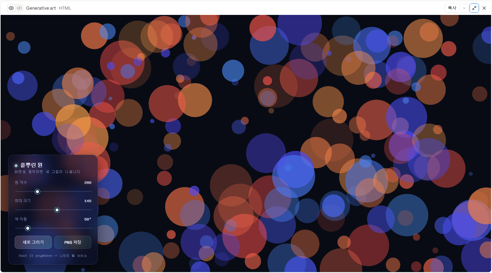
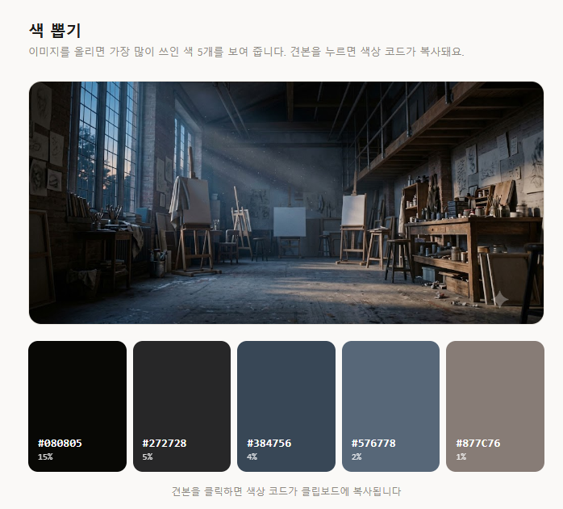

바이브 코딩: 코드를 몰라도 만든다

12장에서 우리는 도구와 도구를 잇고, 반복 작업을 자동화하고, 나만의 어시스턴트를 만들었다. 그 연장선에 한 가지가 더 있다. 인공지능에게 프로그램을 대신 짜게 하는 것이다. 화면 속에서 움직이고 반응하는 작품, 자기 작업을 도와주는 작은 도구, 포트폴리오를 담을 웹사이트 — 예전에는 프로그래밍을 배워야 만들 수 있던 것들을, 이제는 말로 시켜서 만들 수 있다.
이 부록은 본문에서 빼내어 여기에 두었다. 이 책의 목표는 창작이지 프로그래밍이 아니고, 한 학기 수업에 이 내용까지 넣으면 너무 무겁기 때문이다. 그러나 해 보고 싶은 사람에게는 문이 활짝 열려 있다. 코드를 한 줄도 몰라도 시작할 수 있게 썼다. 여기서 다루는 것은 프로그래밍 강의가 아니라, 12장에서 익힌 태도 — 인공지능을 지휘하고, 결과를 확인하고, 말로 고쳐 나가는 것 — 를 화면에 움직이는 결과물로 확장하는 방법이다.
바이브 코딩이란 무엇인가
바이브 코딩vibe coding은 만들고 싶은 것을 자연어로 설명하면 인공지능이 그것을 실제로 도는 프로그램으로 옮겨 주는 방식을 말한다. 이름의 바이브(vibe, 분위기·느낌)는 태도를 가리킨다. 문법을 한 줄씩 따지는 대신, 원하는 느낌과 동작을 말하고 결과를 보면서 조율한다는 뜻이다.
원리는 3장·4장에서 본 것과 같다. 언어 모델은 사람의 글을 학습하면서 방대한 양의 프로그램 코드도 함께 학습했다. 그래서 자연어로 된 요청을 코드로 번역하는 일을 꽤 잘한다. 여러분이 "마우스를 따라다니는 색색의 원을 그려 줘"라고 하면, 모델은 그 뜻에 맞는 코드를 짜서 내놓는다. 여러분이 할 일은 코드를 읽고 쓰는 것이 아니라, 무엇을 원하는지 분명히 말하고, 나온 결과가 원하는 것인지 판단하고, 아니면 어떻게 다른지 말해 주는 것이다.
이 판단과 조율이 핵심이라는 점에서, 바이브 코딩은 이 책 전체가 가르쳐 온 것과 정확히 같은 능력을 쓴다. 이미지를 뽑을 때 좋은 것과 아쉬운 것을 가려내고 말로 고쳐 달라고 했듯이, 여기서는 동작을 가려내고 말로 고친다. 다른 점은 결과물이 그림이나 글이 아니라 움직이고 반응하는 것이라는 데 있다.
바이브 코딩은 프로그래밍을 배우는 일이 아니다. 인공지능에게 프로그램을 시키는 일이다. 필요한 능력은 코드 지식이 아니라 원하는 것을 분명히 말하고 결과를 판단하는 눈이며, 그것은 이 책 내내 길러 온 능력이다.
무엇으로 시작할까
무료로, 설치 없이, 브라우저만으로 시작할 수 있다. 아래는 서로 성격이 다른 출발점들이다. 하나만 골라 익히면 충분하고, 요금과 한도는 자주 바뀌므로 부록 A와 각 서비스의 안내를 함께 확인하기 바란다.
브라우저에서 바로 그림과 애니메이션을 만드는 무료 편집기다. 설치도 가입도(저장하려면 계정은 필요하다) 거의 필요 없다. 제너러티브 아트와 인터랙티브 작품의 표준 출발점으로, 예술·디자인 쪽에서 가장 널리 쓰인다. 인공지능에게 "p5.js로 …를 그려 줘"라고 부탁해 받은 코드를 여기에 붙여 넣고 실행 버튼만 누르면 된다.
대화하면서 코드를 만들고, 그 자리에서 바로 실행되는 미리보기까지 보여 준다. 만든 것을 보며 "더 느리게", "색을 파스텔로"처럼 말로 이어서 고칠 수 있어 바이브 코딩에 잘 맞는다. 무료 범위에서도 충분히 시작할 수 있다.
구글 계정으로 쓰는 무료 실험 공간이다. 코드를 요청하고 결과를 받아 보는 용도로 쓸 수 있으며, 하루 한도가 있다. 위 두 도구의 대안으로 둔다.
"이런 웹사이트를 만들어 줘"라고 하면 여러 화면으로 된 웹앱을 통째로 짜서 그 자리에서 배포까지 해 주는 부류다. 포트폴리오 사이트를 빠르게 세울 때 편하다. 무료 크레딧으로 시작하되 복잡한 것을 만들수록 유료로 넘어간다는 점은 알아 두자.
완성한 것을 인터넷 주소로 공개하는 무료 호스팅이다. 만든 파일을 올리면 누구나 열 수 있는 링크가 생긴다. D.5절에서 쓴다.
그림·애니메이션이 목표라면 p5.js Web Editor + Claude 조합으로 시작하는 것을 권한다. 하나는 결과를 실행하는 자리, 하나는 코드를 만들어 주는 상대다. 웹사이트가 목표라면 Bolt류 하나를 골라 곧장 사이트를 세우는 편이 빠르다.
첫 결과물: 제너러티브 아트
제너러티브 아트generative art는 사람이 정한 규칙과 우연을 코드가 실행해 만들어 내는 시각 작품이다. 같은 코드를 돌릴 때마다 조금씩 다른 결과가 나오게 만들 수도 있다. 첫걸음으로 좋은 이유는, 결과가 눈에 바로 보이고 조금만 바꿔도 느낌이 확 달라져 조율하는 재미가 크기 때문이다.
인공지능에게 이렇게 부탁해 보자. 대화형 도구에는 한국어로 말해도 잘 통한다.
p5.js로 제너러티브 아트를 만들어 줘.
- 어두운 남색 배경에 200개의 원을 흩뿌린다
- 원마다 크기와 투명도를 조금씩 다르게
- 색은 분홍과 청록 사이에서 무작위로
- 브라우저 창 크기에 맞춰 그린다
초보자가 p5.js Web Editor에 그대로 붙여 넣을 수 있는
완성된 코드로 주고, 각 부분이 무엇을 하는지 짧은 주석을 달아 줘.(인공지능이 setup과 draw로 이루어진 p5.js 코드 한 벌을 내놓는다. 각 줄 옆에 "여기서 배경을 칠한다", "여기서 원의 색을 무작위로 고른다" 같은 주석이 붙어 있다.)
받은 코드를 p5.js Web Editor에 붙여 넣고 실행하면 결과가 바로 뜬다. 여기서부터가 진짜다. 마음에 안 드는 곳을 말로 고친다.
좋아. 그런데 원이 너무 빽빽해. 개수를 절반으로 줄이고,
큰 원 몇 개는 흐릿하게 번지도록 그림자를 넣어 줘.이렇게 말하기 → 실행해 보기 → 다시 말하기를 몇 번 돌면 원하는 화면에 다가간다. 코드가 왜 그렇게 생겼는지 이해하지 못해도 괜찮다. 여러분이 하는 일은 감독의 일이다. 무엇이 좋은지 나쁜지 판단하고, 다음 지시를 내리는 것.
바이브 코딩의 리듬은 이미지 작업과 같다. 한 번에 완성하려 하지 말고 작게 요청하고, 실행해 보고, 한 군데씩 고쳐 나간다. 큰 덩어리를 통째로 바꾸라고 하기보다 "이 부분만 이렇게"가 잘 통한다.

정해진 그림을 넘어, 보는 사람의 움직임에 반응하게 만들면 작품이 살아난다. 마우스를 따라오게 하거나, 클릭하면 색이 번지게 하거나, 마이크로 들어온 소리 크기에 따라 도형이 커지게 할 수 있다.
방금 만든 작품을 인터랙티브하게 바꿔 줘.
- 마우스를 움직이면 그 위치에서 원들이 부드럽게 밀려난다
- 클릭하면 그 자리에 빛이 번지는 효과
- 아무것도 안 하면 천천히 원래 자리로 돌아온다같은 방식으로 자기 작업을 도와주는 작은 도구도 만들 수 있다. 거창한 앱이 아니라, 손에 딱 맞는 한 가지 일을 하는 것들이다. 몇 가지 예를 든다.
- 팔레트 추출기: 이미지를 올리면 주요 색 다섯 개를 색상 코드와 함께 뽑아 주는 도구. 무드보드를 만들 때 쓴다.
- 프롬프트 랜덤 생성기: 매체·화풍·조명 어휘를 무작위로 조합해 이미지 프롬프트 아이디어를 뽑아 주는 도구(4장·부록 B의 어휘를 넣어 둔다).
- 대비 확인기: 글자색과 배경색을 넣으면 읽기 편한 조합인지 알려 주는 도구. 포스터·웹 디자인에 쓴다.
이미지 파일을 올리면 그 안에서 가장 많이 쓰인 색 5개를
큰 색 견본과 색상 코드(#RRGGBB)로 보여 주는 웹 페이지를 만들어 줘.
- 브라우저에서 파일만 열면 바로 되는 한 개의 HTML 파일로
- 색 견본을 클릭하면 색상 코드가 복사되게
- 화면은 단순하고 깔끔하게이런 도구는 HTML 파일 하나로 나오는 경우가 많다. 인공지능이 준 내용을 텍스트 편집기에 붙여 넣고 내도구.html처럼 저장한 뒤 더블클릭하면 브라우저에서 열린다. 남에게 주고 싶으면 파일만 보내면 된다.
브라우저에서 파일을 열기만 하면 되는 것과, 서버가 있어야 도는 것은 다르다. 인공지능이 "이건 서버가 필요하다", "설치가 필요하다"는 코드를 내놓으면 초보자에겐 벽이 높다. 그럴 때는 "설치나 서버 없이, 브라우저에서 파일 하나로 되는 방식으로 다시 만들어 줘"라고 요청 범위를 좁히면 대개 훨씬 쉬운 답이 나온다.

포트폴리오 사이트로 내놓기
만든 것을 자기만 보는 데서 그치지 않고 인터넷 주소로 공개하면, 그 자체가 13장에서 준비할 포트폴리오가 된다. 지금까지 이 책으로 만든 이미지·글·음악·영상과 이 부록에서 만든 인터랙티브 작품을 한자리에 모아 보여 주는 사이트를 세워 보자.
내 작품을 보여 줄 한 페이지짜리 포트폴리오 웹사이트를 만들어 줘.
- 맨 위에 이름과 한 줄 소개
- 작품을 격자로 배열하고, 각 칸에 이미지와 제목·설명
- 칸을 클릭하면 크게 보인다
- 스마트폰에서도 잘 보이게
- 차분하고 여백이 넉넉한 디자인
나중에 내가 이미지 파일과 설명만 바꿔 끼울 수 있게,
그 부분이 어디인지 표시해 줘.받은 결과를 확인하고 말로 다듬은 뒤, 공개는 무료 호스팅으로 한다. 배포deploy는 만든 파일을 인터넷에 올려 누구나 열 수 있는 주소를 만드는 일을 말한다. GitHub Pages나 Netlify에 파일을 올리면 내이름.github.io 같은 주소가 생긴다. 절차 자체도 인공지능에게 물어보면 지금 화면에 맞춰 단계별로 안내해 준다.
여기서 세운 사이트는 13장의 최종 발표·포트폴리오로 그대로 이어진다. 각 작품 옆에 어떤 도구로 어떻게 만들었는지, 어디까지가 자기 판단이었는지를 적어 두면(5장·부록 C의 태도) 완성도가 크게 오른다.
바이브 코딩의 함정과 한계
되는 것은 되고, 안 되는 것은 안 된다. 정직하게 짚어 둔다.
인공지능이 준 코드가 틀릴 수 있다. 그럴듯한데 실제로는 돌지 않거나, 돌지만 엉뚱하게 동작하는 코드를 자신 있게 내놓기도 한다(3장의 환각과 같은 성질이다). 반드시 실행해서 눈으로 확인해야 한다. 오류 메시지가 나오면 그 메시지를 그대로 복사해 "이 오류가 났어, 고쳐 줘"라고 돌려주면 대개 해결된다.
복잡해질수록 벽이 높아진다. 작은 작품과 한 페이지짜리 도구까지는 말로 쉽게 간다. 그러나 여러 화면이 얽히고 데이터를 저장해야 하는 규모가 되면, 코드를 전혀 모르는 채로는 막히는 지점이 온다. 그 선을 넘어 제대로 만들고 싶어졌다면, 그때가 프로그래밍을 조금 배워 볼 좋은 때다. 바이브 코딩은 그 입구까지 데려다준다.
비밀은 붙여 넣지 않는다. 인공지능이 만든 코드에 로그인 비밀번호나 유료 서비스의 열쇠(API 키)를 그대로 적어 공개 사이트에 올리면 남이 가져다 쓸 수 있다. 그런 값이 필요하다는 코드가 나오면 멈추고, 어떻게 안전하게 다루는지부터 물어보라.
남의 것을 확인한다. 인공지능이 외부 코드 묶음(라이브러리library)을 끌어다 쓰는 경우가 있다. 그 자체는 흔한 일이지만, 작품을 공개하거나 과제로 낼 때는 이용 조건을 확인하는 습관을 들이자. 판단 기준은 5장과 부록 C의 체크리스트가 그대로 적용된다 — 내가 만든 부분과 가져온 부분을 구분하고, 공개해도 되는지 확인하는 것.
바이브 코딩은 창작의 경계를 넓히는 도구이지 프로그래밍의 대체가 아니다. 작은 것을 빠르게 만들어 세상에 내놓는 데 강하고, 복잡하고 정교한 것에는 한계가 있다. 그 경계를 알고 쓰면, 코드를 몰라도 어제는 못 만들던 것을 오늘 만들 수 있다.